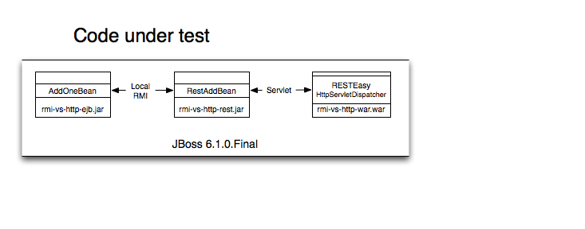
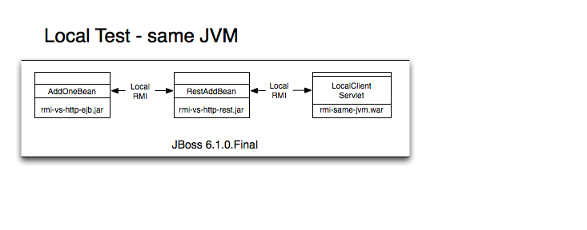
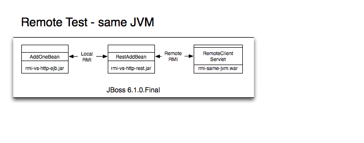
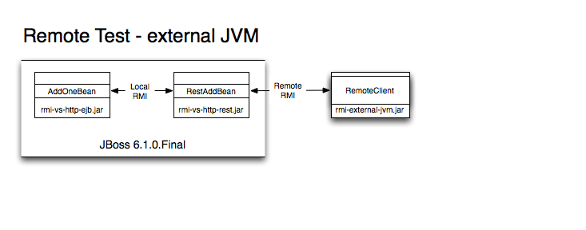
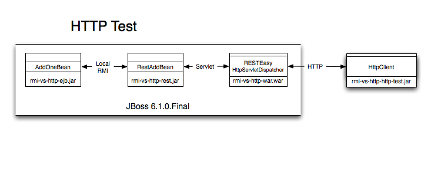
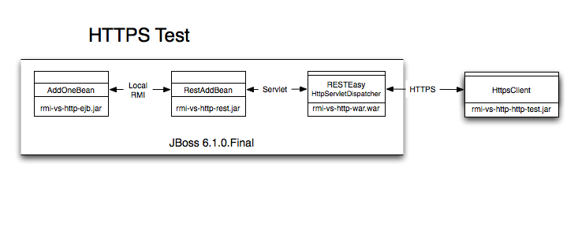

RMI vs HTTP
Purpose
The purpose of this project is to test the performance of EJB communication vs exposing the EJB as a service and communication over HTTP/HTTPS
Design
Code under Test
The code under test is 2 EJBs and a WAR. The first EJB has a method that simply adds one to the input. The REST EJB gets a reference to the first EJB and exposes it's method via RESTEasy. The WAR file simple exposes the REST EJB and serializes the response to XML. Typically, this setup would go into an EAR, but I choose to deploy them separately.
Here is a diagram of the interactions in code
Test design
There are five test scenarios listed below with graphics to help explain the interactions
- RMI using a local interface to the REST EJB, obviously the same JVM 
- RMI using a remote interface to the REST EJB on the same JVM 
- RMI using a remote interface to the REST EJB on a different JVM 
- HTTP calling the exposed REST endpoint from the REST EJB 
- HTTPS calling the exposed REST endpoint from the REST EJB 
The tests run on the same machine, so there is no network latency. In practice, the network will decrease the performance if the remote interface is called from a different machine or if the HTTP client is located on a different server.
Project page
If you want more info about the design, or would like to run this for yourself, please refer to the project page on github at www.github.com/mjwall/RMIvsHTTP
Results
The five scenarios where run 30 times each with 10, 100, 1,000, 10,000 and 100,000 executions per run. That's right, I added one to a number 16,666,500 times. 100,000 took over 3 hours to complete. I tried 1,000,000 executions per run, but my poor laptop gave up.
Data
The following table displays the average executions per second for each scenario. The raw tdata is available by clicking on a number, if you really want to dig through.
| Scenario | 10 executions/run | 100 executions/run | 1000 executions/run | 10000 executions/run | 100000 executions/run |
|---|---|---|---|---|---|
| Local same JVM | 5000 | 5263.16 | 5319.15 | 5270.57 | 5099.96 |
| Remote same JVM | 3333.33 | 3225.81 | 3289.47 | 3195.91 | 3252.67 |
| Remote external JVM | 322.58 | 469.48 | 624.61 | 525.60 | 528.77 |
| HTTP | 181.81 | 286.53 | 348.19 | 358.94 | 369.58 |
| HTTPS | 185.19 | 271.00 | 333.11 | 343.96 | 352.61 |
Chart
The following chart summarizes my test results shown in the table above. The chart is interactive, so mouse over the lines and click the legend. It is hard to see the difference between HTTP and HTTPS,, so click on the local and both remotes in the legend on the chart to zoom in.
Conclusion
My intent was to make this a realistic experiment, but there are a couple of things missing. One, there is relatively little network latency as this was run on one box. That will only decrease the performance for remote-external, http and https. Second, the XML reponse from the RESTEasy service is small. If you are passing back a large amount of data, parsing the bigger XML will decrease performance for http and https. Based on these numbers alone, I'll make the following broad statements.
- Local invocation of an EJB is 15-25 times faster than either HTTP or HTTPS.
- Using the local interface on the same JVM is roughly 1.5 times faster than using the remote interface on the same JVM.
- Remote interface on the same JVM is 6-10 times faster than remote interface on a seperate JVM. Some of this may be due to fact that I had to pull in the jboss-as-client package to run in a different JVM. That package was huge.
- Remote interface on an external JVM is 1.5-1.7 times faster than HTTP or HTTPS.
- HTTP and HTTPS are roughly equivalent.
- Executions per second generally went up as I increased the executions per run. Not sure exactly why, but I'll attribute it hotspot, jboss caching and a startup cost on the first run in each test.
Thanks for reading this. I am tired of looking at it